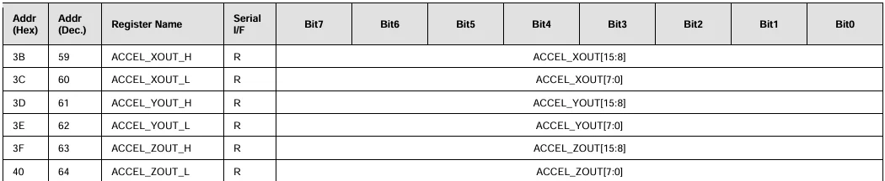
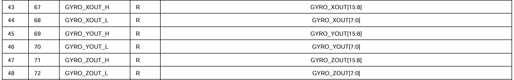
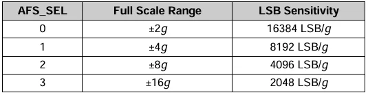
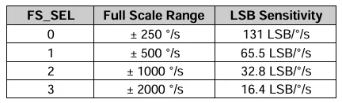
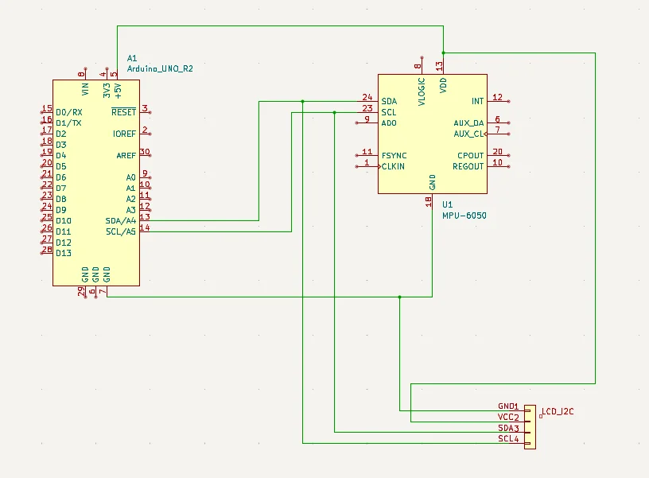
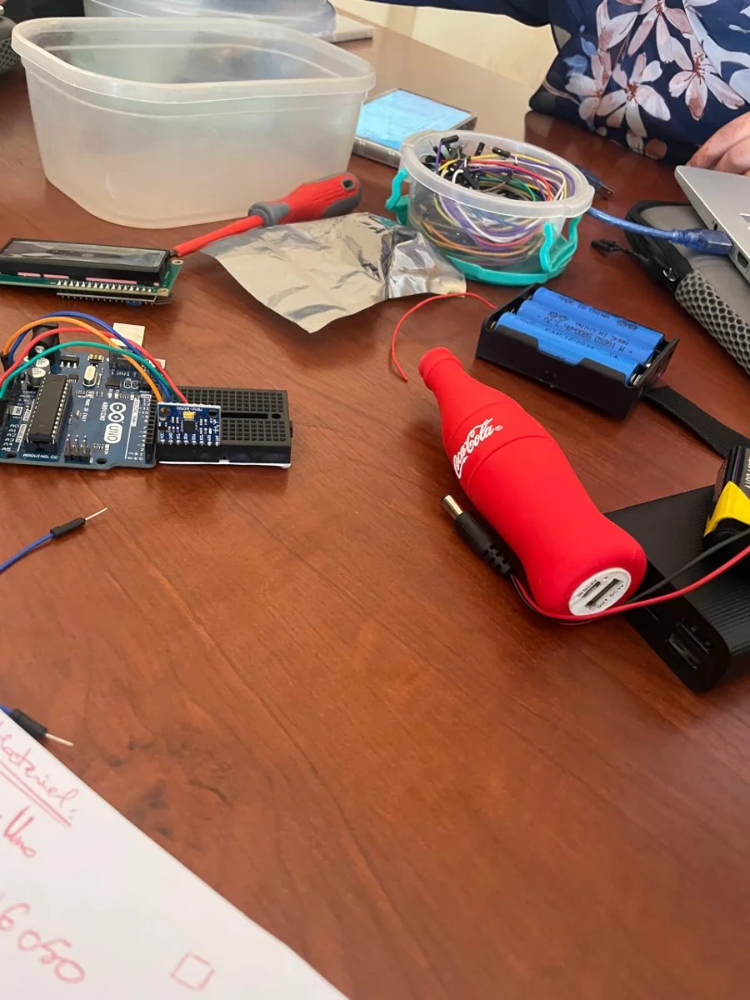
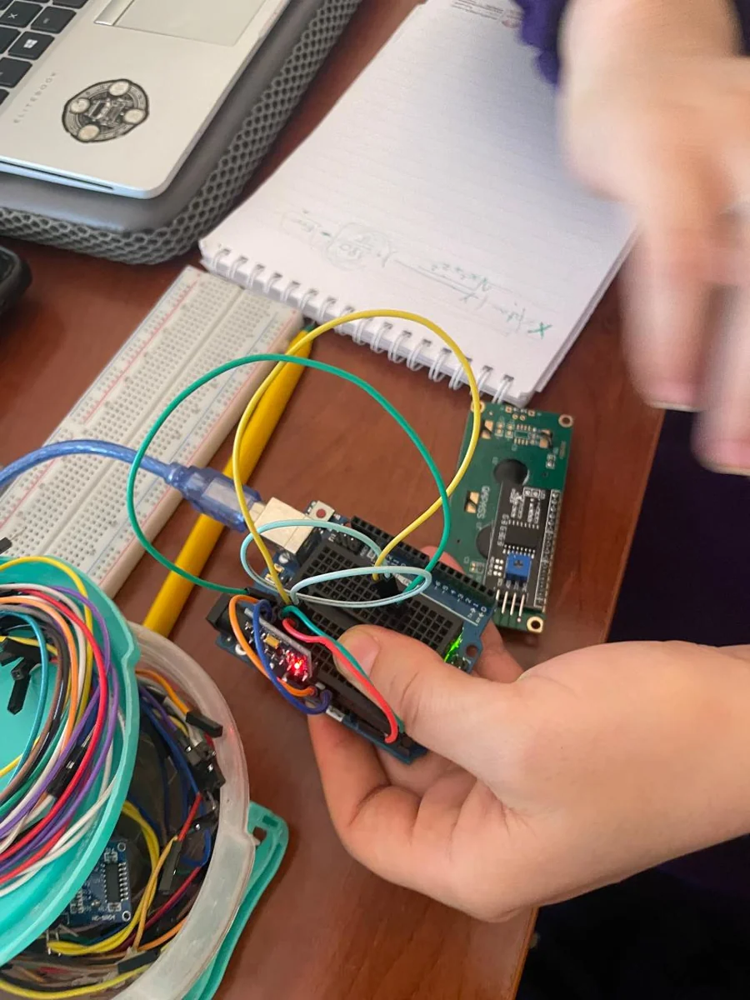
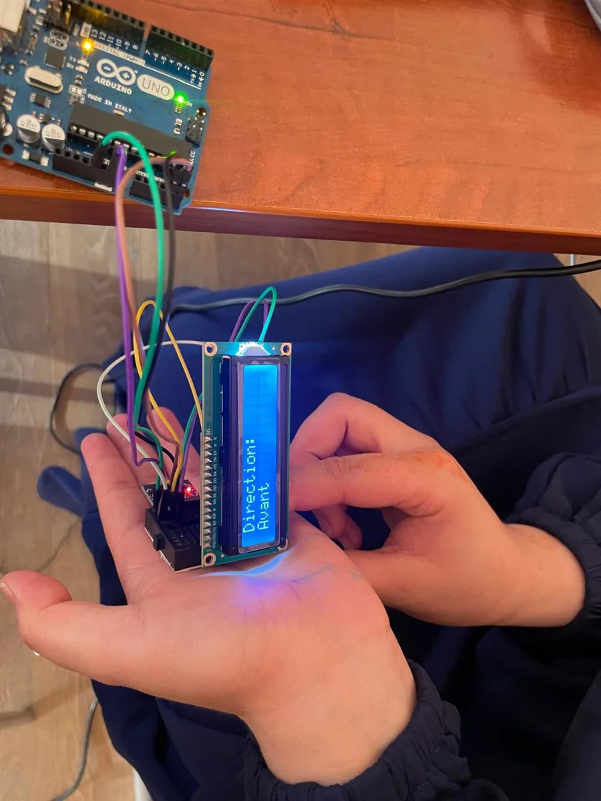
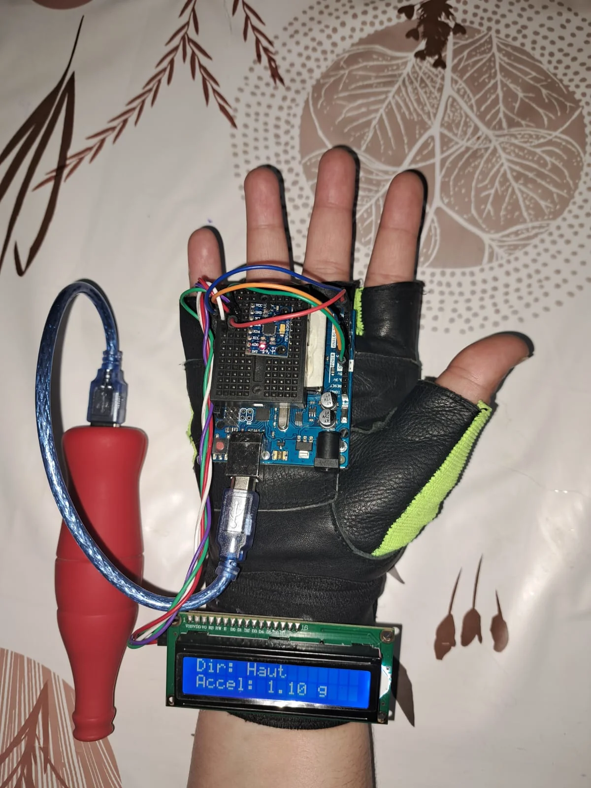

Projet 1 - Gyroscope et Accéléromètre MPU6050
1. Contexte et objectifs:
Les données de navigation telles que la direction et l'accélération sont essentielles dans la conception d’un robot. Ce projet utilise un module MPU6050, combinant un gyroscope et un accéléromètre, pour mesurer l’orientation et les mouvements.
Ce projet a pour objectif de :
- Comprendre le fonctionnement d’un capteur inertiel (IMU).
- afficher en temps réel les directions (haut, bas, gauche, droite) ainsi que les données d’accélération sur un écran LCD.
- Utiliser le protocole de communication I2C.
- Appliquer les bonnes pratiques de conception logicielle (structure modulaire, classes bien définies, etc.).
2. Choix du capteur : MPU6050
Le MPU6050 est un capteur IMU (Inertial Measurement Unit) 6 axes qui combine :
- Un accéléromètre 3 axes
- Un gyroscope 3 axes
Il utilise une interface I2C, parfaitement compatible avec les microcontrôleurs comme l’Arduino, ce qui facilite la lecture des données avec un minimum de fils et une consommation réduite.
Il est largement utilisé dans la communauté Arduino, avec de nombreuses bibliothèques disponibles (comme MPU6050.h ou Wire.h), ce qui simplifie le développement et le débogage
Caractéristiques principales : datasheet du MPU6050
- Interface I2C (adresse par défaut : `0x68`)
- Plage de mesure accéléromètre : ±2g, ±4g, ±8g, ±16g
- Tension d’alimentation : 3.3V – 5V
3. Principe de fonctionnement
Le capteur MPU6050 combine deux fonctions principales : un accéléromètre et un gyroscope. L’accéléromètre permet de mesurer l’accélération linéaire sur les trois axes (X, Y, Z), ce qui permet de détecter les mouvements de la main vers le haut, le bas, la gauche, la droite, l’avant ou l’arrière. De son côté, le gyroscope mesure la vitesse angulaire sur ces mêmes axes, ce qui permet de connaître l’orientation de la main, comme une inclinaison ou une rotation.
Pour transmettre les données au microcontrôleur, le MPU6050 utilise le protocole de communication I2C. Ce protocole est simple et efficace, car il ne nécessite que deux fils : la ligne SCL (pour l’horloge) et la ligne SDA (pour les données). Grâce à cette liaison, le microcontrôleur peut envoyer des commandes au capteur et lire ses valeurs en temps réel.
Pour que le MPU6050 envoie les données, il ne suffit pas de simplement le connecter. Étant donné qu’on utilise une communication I2C, il faut suivre un protocole bien défini :
a. Envoi d’une commande au capteur
Avant de lire une donnée, l’Arduino doit envoyer l’adresse du registre souhaité. Cette adresse indique quel type de donnée on veut (accélération, vitesse angulaire)


b. Structure des données reçues
Chaque mesure (accélération ou rotation) est codée sur 16 bits (2 octets) :
- 8 bits MSB (poids fort)
- 8 bits LSB (poids faible)
Les valeurs sont en complément à deux (signed integer), ce qui permet d'indiquer un sens positif ou négatif du mouvement.
c. Conversion des données brutes
Pour exploiter les mesures, il faut les convertir en unités physiques :
- Accélération en g (gravité terrestre)
- Rotation en °/s (degrés par seconde)


4. Schéma électronique sous KICAD

5. Codage
a. Code 1:
Ce code utilise la librairie MPU6050 sur Arduino IDE.
#include <Wire.h> // Bibliothèque pour communication I2C
#include <LiquidCrystal_I2C.h> // Bibliothèque pour écran LCD I2C
#include <MPU6050.h> // Bibliothèque pour capteur MPU6050
// Initialisation écran LCD avec adresse I2C 0x27, 16 colonnes et 2 lignes
LiquidCrystal_I2C lcd(0x27, 16, 2);
// Création instance MPU6050
MPU6050 mpu;
// Variables pour stocker l'accélération en g (gravité)
float ax, ay, az;
// Norme totale de l'accélération (valeur absolue)
float accel_norm;
// Seuil d'accélération (en g) pour détecter un mouvement significatif
const float threshold = 0.2;
void setup() {
Serial.begin(9600); // Initialisation communication série à 9600 bauds (pour debug éventuel)
Wire.begin(); // Initialisation bus I2C
lcd.init(); // Initialisation écran LCD
lcd.backlight(); // Allumer rétroéclairage LCD
// Initialisation MPU6050
mpu.initialize();
// Vérification de la connexion avec MPU6050
if (!mpu.testConnection()) {
lcd.print("MPU6050 error"); // Affiche erreur si capteur non détecté
while (1); // Bloque le programme ici (boucle infinie)
}
lcd.clear();
lcd.print("MPU6050 OK"); // Confirmation que capteur est prêt
delay(1000);
lcd.clear();
}
void loop() {
// Variables pour stocker les valeurs brutes (raw) lues depuis MPU6050
int16_t rawAx, rawAy, rawAz;
// Lecture des valeurs d'accélération brute sur 3 axes
mpu.getAcceleration(&rawAx, &rawAy, &rawAz);
// Conversion des valeurs brutes en unités g (gravité)
// Selon datasheet, la sensibilité est 16384 LSB/g en mode ±2g
ax = rawAx / 16384.0;
ay = rawAy / 16384.0;
az = rawAz / 16384.0;
// Calcul de la norme de l'accélération totale vectorielle
// sqrt(x² + y² + z²) -> donne l'intensité totale ressentie
accel_norm = sqrt(ax * ax + ay * ay + az * az);
// Détection de la direction dominante en fonction du seuil
String direction = ""; // Texte à afficher (direction détectée)
if (ax > threshold) {
direction = "Gauche"; // Si acceleration sur axe X positive > seuil
}
else if (ax < -threshold) {
direction = "Droite"; // Si acceleration sur axe X négative < -seuil
}
else if (ay > threshold) {
direction = "Arriere"; // Si acceleration sur axe Y positive > seuil
}
else if (ay < -threshold) {
direction = "Avant"; // Si acceleration sur axe Y négative < -seuil
}
else if (az > threshold) {
direction = "Haut"; // Si acceleration sur axe Z positive > seuil
}
else if (az < -threshold) {
direction = "Bas"; // Si acceleration sur axe Z négative < -seuil
}
else {
direction = "Stable"; // Si aucune acceleration significative détectée
}
// Affichage sur l'écran LCD
lcd.clear(); // Efface l'écran à chaque boucle
lcd.setCursor(0, 0); // Position curseur ligne 0, colonne 0
lcd.print("Dir: "); // Affiche label "Direction"
lcd.print(direction); // Affiche la direction détectée
lcd.setCursor(0, 1); // Position curseur ligne 1, colonne 0
lcd.print("Accel: "); // Affiche label "Accélération"
lcd.print(accel_norm, 2); // Affiche la norme de l'accélération avec 2 décimales
lcd.print(" g"); // Affiche unité g (gravité)
delay(300); // Pause de 300 ms avant prochaine lecture
}
b. Code 2:
Ce code n'utilise pas la librairie MPU6050 sur Arduino IDE.
#include <Wire.h> // Bibliothèque pour la communication I2C
#include <LiquidCrystal_I2C.h> // Bibliothèque pour gérer l'écran LCD I2C
const int MPU = 0x68; // Adresse I2C du capteur MPU6050 (valeur par défaut)
LiquidCrystal_I2C lcd(0x27, 16, 2); // Initialisation de l'écran LCD I2C (adresse 0x27, 16 colonnes, 2 lignes)
// Variables pour stocker les données d'accélération
float AccX, AccY, AccZ;
// Variables pour stocker les données de gyroscope
float GyroX, GyroY, GyroZ;
// Angles calculés à partir de l'accéléromètre
float accAngleX, accAngleY;
// Angles calculés à partir du gyroscope (intégrés)
float gyroAngleX, gyroAngleY, gyroAngleZ;
// Angles fusionnés (roll, pitch, yaw)
float roll, pitch, yaw;
// Erreurs calculées lors de la calibration (offsets à enlever)
float AccErrorX, AccErrorY, GyroErrorX, GyroErrorY, GyroErrorZ;
// Variables pour gérer le temps écoulé entre deux mesures
float elapsedTime, currentTime, previousTime;
// Compteur utilisé pour la calibration
int c = 0;
void setup() {
Serial.begin(19200); // Initialisation du port série à 19200 bauds pour debug
Wire.begin(); // Démarrage de la communication I2C
// Réveil du MPU6050 qui est en veille par défaut
Wire.beginTransmission(MPU); // Démarrer la transmission vers MPU
Wire.write(0x6B); // Registre PWR_MGMT_1 (gestion alimentation)
Wire.write(0x00); // Mettre à 0 pour sortir du mode veille
Wire.endTransmission(true); // Fin de la transmission
// Initialisation de l'écran LCD
lcd.begin(16, 2); // Définir taille LCD (16x2)
lcd.backlight(); // Activer rétroéclairage
lcd.setCursor(0, 0); // Positionner curseur au début ligne 0
lcd.print("Initialisation..."); // Message de démarrage
delay(1000); // Pause d'1 seconde
lcd.clear(); // Effacer écran
// Calibration automatique du capteur (calcul des erreurs à soustraire)
calculate_IMU_error();
delay(20); // Petite pause
}
void loop() {
// === Lecture des valeurs brutes de l'accéléromètre ===
Wire.beginTransmission(MPU);
Wire.write(0x3B); // Adresse du registre de début des données Accel
Wire.endTransmission(false); // Garder la communication ouverte
Wire.requestFrom(MPU, 6, true); // Lire 6 octets (2 par axe X,Y,Z)
// Conversion des données brutes en valeurs en g (gravité)
AccX = (Wire.read() << 8 | Wire.read()) / 16384.0; // Accélération X
AccY = (Wire.read() << 8 | Wire.read()) / 16384.0; // Accélération Y
AccZ = (Wire.read() << 8 | Wire.read()) / 16384.0; // Accélération Z
// Calcul des angles d'inclinaison (roll, pitch) avec accéléromètre
accAngleX = (atan(AccY / sqrt(pow(AccX, 2) + pow(AccZ, 2))) * 180 / PI) - AccErrorX;
accAngleY = (atan(-AccX / sqrt(pow(AccY, 2) + pow(AccZ, 2))) * 180 / PI) - AccErrorY;
// === Lecture des valeurs brutes du gyroscope ===
previousTime = currentTime; // Sauvegarde du temps précédent
currentTime = millis(); // Temps actuel en ms
elapsedTime = (currentTime - previousTime) / 1000; // Temps écoulé en secondes
Wire.beginTransmission(MPU);
Wire.write(0x43); // Adresse du registre de début des données Gyro
Wire.endTransmission(false); // Garder la communication ouverte
Wire.requestFrom(MPU, 6, true); // Lire 6 octets (2 par axe X,Y,Z)
// Conversion des données brutes en degrés/seconde
GyroX = (Wire.read() << 8 | Wire.read()) / 131.0;
GyroY = (Wire.read() << 8 | Wire.read()) / 131.0;
GyroZ = (Wire.read() << 8 | Wire.read()) / 131.0;
// Soustraction des erreurs calculées lors de la calibration
GyroX = GyroX - GyroErrorX;
GyroY = GyroY - GyroErrorY;
GyroZ = GyroZ - GyroErrorZ;
// Intégration des vitesses angulaires pour obtenir les angles
gyroAngleX += GyroX * elapsedTime;
gyroAngleY += GyroY * elapsedTime;
yaw += GyroZ * elapsedTime;
// Application d'un filtre complémentaire pour combiner accéléromètre et gyroscope
// On donne plus de poids au gyroscope (0.96) car plus précis sur court terme
// L'accéléromètre corrige la dérive du gyroscope sur le long terme (0.04)
roll = 0.96 * gyroAngleX + 0.04 * accAngleX;
pitch = 0.96 * gyroAngleY + 0.04 * accAngleY;
// === Détection simple de la direction du mouvement en fonction des angles ===
String direction = "haut"; // Valeur par défaut
if (roll < -40 ) direction = "Avant";
else if (roll < 80 && roll > 60) direction = "Arriere";
else if (pitch > 15) direction = "Droite";
else if (pitch < -15) direction = "Gauche";
else if (pitch > 30) direction = "Haut";
else if (pitch > 120 && roll > 100) direction = "Bas";
// === Affichage de la direction détectée sur l'écran LCD ===
lcd.clear();
lcd.setCursor(0, 0);
lcd.print("Direction:");
lcd.setCursor(0, 1);
lcd.print(direction);
// Affichage des angles pour debug sur moniteur série
Serial.print("Roll: "); Serial.print(roll);
Serial.print(" | Pitch: "); Serial.print(pitch);
Serial.print(" | Yaw: "); Serial.println(yaw);
delay(300); // Pause avant prochaine lecture
}
// === Fonction pour calibrer automatiquement le capteur au démarrage ===
void calculate_IMU_error() {
// Calibration accéléromètre : moyenne des angles calculés sur plusieurs mesures
while (c < 200) {
Wire.beginTransmission(MPU);
Wire.write(0x3B);
Wire.endTransmission(false);
Wire.requestFrom(MPU, 6, true);
AccX = (Wire.read() << 8 | Wire.read()) / 16384.0;
AccY = (Wire.read() << 8 | Wire.read()) / 16384.0;
AccZ = (Wire.read() << 8 | Wire.read()) / 16384.0;
// Calcul des angles roll et pitch à partir de l'accéléromètre
AccErrorX += atan(AccY / sqrt(pow(AccX, 2) + pow(AccZ, 2))) * 180 / PI;
AccErrorY += atan(-AccX / sqrt(pow(AccY, 2) + pow(AccZ, 2))) * 180 / PI;
c++;
}
// Moyenne des erreurs calculées
AccErrorX /= 200;
AccErrorY /= 200;
c = 0; // Réinitialisation compteur
// Calibration gyroscope : moyenne des valeurs lues au repos
while (c < 200) {
Wire.beginTransmission(MPU);
Wire.write(0x43);
Wire.endTransmission(false);
Wire.requestFrom(MPU, 6, true);
GyroX = Wire.read() << 8 | Wire.read();
GyroY = Wire.read() << 8 | Wire.read();
GyroZ = Wire.read() << 8 | Wire.read();
GyroErrorX += GyroX / 131.0;
GyroErrorY += GyroY / 131.0;
GyroErrorZ += GyroZ / 131.0;
c++;
}
// Moyenne des erreurs gyroscopiques
GyroErrorX /= 200;
GyroErrorY /= 200;
GyroErrorZ /= 200;
// Affichage des résultats de calibration dans le moniteur série
Serial.println("Calibration Terminee:");
Serial.print("AccErrorX: "); Serial.println(AccErrorX);
Serial.print("AccErrorY: "); Serial.println(AccErrorY);
Serial.print("GyroErrorX: "); Serial.println(GyroErrorX);
Serial.print("GyroErrorY: "); Serial.println(GyroErrorY);
Serial.print("GyroErrorZ: "); Serial.println(GyroErrorZ);
}
6. Conception d'un prototype et démonstration




7. Remarques
- Pour des lectures plus stables et précises, il est possible d'intégrer un filtre complémentaire ou un filtre de Kalman.
- Ce projet constitue une excellente base pour des systèmes plus avancés, tels que les contrôleurs, les robots auto-équilibrés ou les plateformes de stabilisation.
8. Conclusion
Ce projet nous a permis d’explorer l’intégration d’un capteur inertiel dans un système embarqué, ainsi que de mettre en œuvre la détection et l’affichage en temps réel des mouvements de la main.
Le module MPU6050 s’est révélé être un outil efficace et accessible pour la détection de l’orientation et des mouvements.
Grâce à sa compatibilité avec l’écosystème Arduino et à la disponibilité de bibliothèques dédiées, le MPU6050 peut être facilement intégré dans divers projets éducatifs ou de prototypage.
L’affichage des directions détectées et des valeurs d’accélération sur un écran LCD 16x2 offre une visualisation claire et pédagogique, idéale pour l’apprentissage des capteurs, de la programmation de microcontrôleurs et des interfaces homme-machine.
Au-delà de son intérêt pédagogique, ce système peut être étendu à des applications telles que le contrôle par gestes, la réalité virtuelle ou la robotique, avec la possibilité d’ajouter une communication Bluetooth ou Wi-Fi pour renforcer l’interactivité.